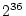

In Mitsuru Matsui, editor, Fast Software Encryption: 8th International Workshop, Lecture Notes in Computer Science, Yokohama, Japan, April 2001. Springer-Verlag. To appear.
Abstract. We show two methods of distinguishing the LEVIATHAN stream cipher from a random stream using  bytes of output and proportional effort; both arise from compression within the cipher. The first models the cipher as two random functions in sequence, and shows that the probability of a collision in 64-bit output blocks is doubled as a result; the second shows artifacts where the same inputs are presented to the key-dependent S-boxes in the final stage of the cipher for two successive outputs. Both distinguishers are demonstrated with experiments on a reduced variant of the cipher.
LEVIATHAN is a new stream cipher developed by David McGrew and Scott Fluhrer of Cisco for the NESSIE project, which uses an innovative structure based on a forest of binary trees to map a key onto a stream of 2^48 32-bit word outputs, in such a way that it is efficient to seek in the stream, or to produce many consecutive outputs. This makes it especially well suited to IPSec encryption.
The NESSIE submission states "Cisco has a patent pending related to LEVIATHAN."
Amusingly, Scott Fluhrer presented the first cryptanalysis of my block cipher, Mercy, at the same conference that this paper was presented.